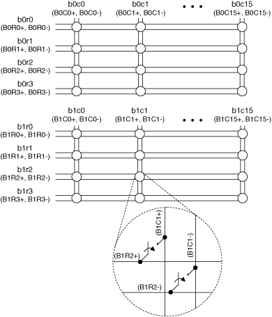
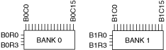

The following figure represents the NI PXI/PXIe-2529 (NI 2529) in the 2-wire dual 4×16 matrix topology.
|  |
|
The NI 2529 in this topology creates two banks of 4×16 matrices. You can only connect rows and columns to rows and columns in the same bank. For more information about how to use the NI 2529 in a dual 4×16 matrix configuration, visit ni.com/info and enter the info code, exudrg.
You can connect the channels of the NI 2529 using the niSwitch Connect Channels VI or the niSwitch_Connect function. For example, to connect bank 0 row 1 to bank 0 column 1, call the niSwitch Connect Channels VI or the niSwitch_Connect function with the channel 1 parameter set to b0r1 and the channel 2 parameter set to b0c1.
When scanning the NI 2529 in dual 4×16 matrix topology, a typical scan list entry could be b0r1->b0c1;. This entry routes the signal connected to bank 0 row 1 to bank 0 column 1.
 |
Note You can, for example, connect b0r1 to b0c0; however, you cannot connect b0r1 directly to b1c1 in this topology. When connecting signals to b0r1, you would connect them to B0R1+ and B0R1– in the terminal block. When connecting signals to b0c0, you would connect them to B0C0+ and B0C0– in the terminal block. |

The following figure identifies the pins for the NI 2529.

 |
Caution Do not connect to RESERVED pins or to NO CONNECT pins. Keep low-voltage pins isolated from row and column channels when high voltage is present. |